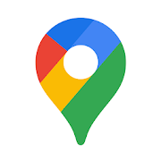

С Google Картами вы сможете быстрее и проще ориентироваться в окружающем мире.Мы уже добавили более 220 стран и территорий, а также сотни миллионов компаний и достопримечательностей.В Картах доступна GPS-навигация, сведения о транспорте и загруженности дорог. Кроме того, вы можете искать районы, рестораны и бары, а также разные достопримечательности – независимо от того, в какой части мира вы находитесь.
спользуйте удобную навигацию в режиме реального времени • Рассчитывайте время прибытия с учетом загруженности дорог • Не опаздывайте на поезда, автобусы или такси благодаря данным в реальном времени. • Экономьте время: маршруты перестраиваются автоматически с учетом пробок, аварий и перекрытых участков.
Находите нужные места и чувствуйте себя как дома • Находите интересные местные рестораны и мероприятия • Узнавайте, что сейчас популярно и какие новые места открылись в интересующих вас районах • Определяйте на основе оценок, понравится ли вам место • Совместное планирование стало проще.Делитесь подборками мест и голосуйте в режиме реального времени • Создавайте списки любимых мест и делитесь ими с друзьями • Исследуйте места, которые обязательно нужно посетить, рекомендованные местными экспертами, Google и издателями. • Оценивайте посещенные места. Добавляйте фотографии, дороги и места, которых нет на карте.
Другие возможности Google Карт • Офлайн-карты для поиска и навигации без подключения к Интернету • Просмотр улиц, снимки интерьеров ресторанов, магазинов и музеев, и многое другое • Схемы, которые помогают ориентироваться в больших зданиях, таких как аэропорты, торговые центры и стадионы
* Некоторые функции поддерживаются не во всех странах
* Навигация не предназначена для крупногабаритных или аварийно-спасательных транспортных средств.